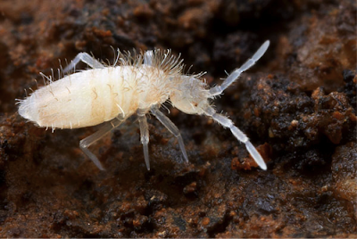
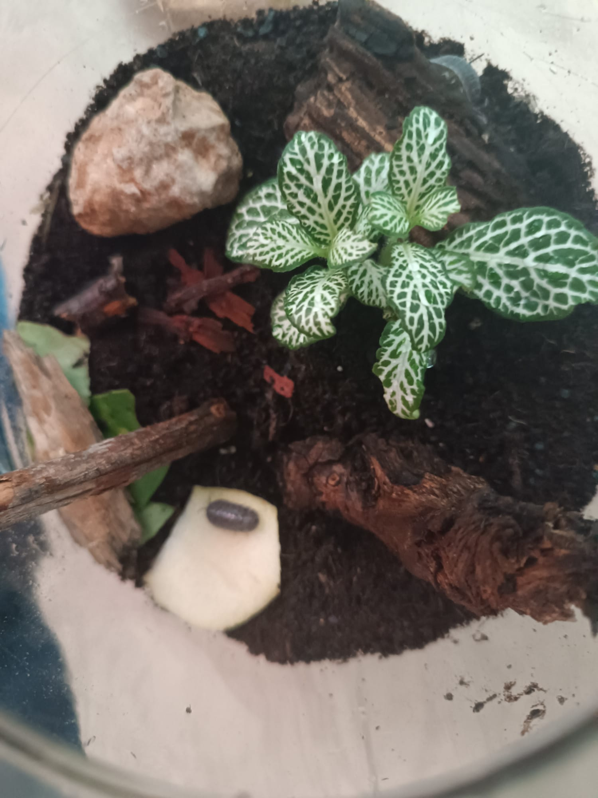

Los terrarios más longevos son aquellos que son bioactivos. Aunque es cierto que puedes hacer un ecosistema funcional simplemente echando hojas caídas o tierra del parque (porque ya contienen bacterias que descomponen la materia orgánica), desde mi experiencia recomiendo introducir a unos bichos que ayudan mucho con el reciclaje: los colémbolos y los bichos bola.
1. ¿Qué son y cómo se reparten el trabajo?
Tanto los bichos bola (isópodos) como los colémbolos (hexápodos) tienen un papel muy importante en la naturaleza y también lo van a tener dentro de nuestro terrario. Su trabajo es descomponer todo lo que cae al suelo, aunque cada uno se especializa en una cosa específica:
Los colémbolos: Son muy pequeñitos (miden 1 o 2 milímetros) y de color blanquecino. Se encargan del "micro-reciclaje". Les gusta mucho el moho y los hongos, así que, si por algún motivo hay demasiada humedad en el terrario, los colémbolos van a ayudarnos a protegerlo y cuidarlo.

Los bichos bola: Son bastante más grandes. Se comen la materia orgánica grande: hojas secas, madera en descomposición o restos de vegetales.

2. El ciclo de los nutrientes: la prueba de la manzana
Estos dos tipos de bichitos son los responsables del ciclo de la reutilización de los nutrientes, así que si no existiesen, las cosas simplemente se pudrirían y perderían todo su valor.
Si echásemos un trozo de manzana a nuestro terrario para aportar nutrientes naturales a tus plantas, a menos que tuviésemos a nuestro "escuadrón de limpieza", ese trozo de manzana acabaría poniéndose negro y se llenaría de moho peludo, atrayendo plagas, como mosquitas o nematodos, las cuales atacarían a todo nuestro terrario.
Sin embargo, si disponemos de ellos, los bichos bola se comerán la manzana y los colémbolos atacarán cualquier rastro de moho que intente salir. Después, ambos le cederán los nutrientes a la tierra a través de sus heces.
3. Cómo conseguirlos (y no meter plagas en casa)
A la hora de introducirlos en tu ecosistema, tienes dos vías:
Para los bichos bola, yo suelo conseguirlos directamente en el parque. Suelen salir cuando hay humedad, así que mi recomendación es salir a buscar pronto por la mañana, justo al amanecer. Levanta piedras, mira debajo de macetas, en esquinas húmedas o debajo de troncos de madera medio podridos.
Los colémbolos es imposible encontrarlos en la calle porque son microscópicos y no se les ve. En este caso, lo más sencillo y seguro es comprar una pequeña tarrina de cultivo inicial, vuelcas un poco de la tarrina en el terrario y ya está.
